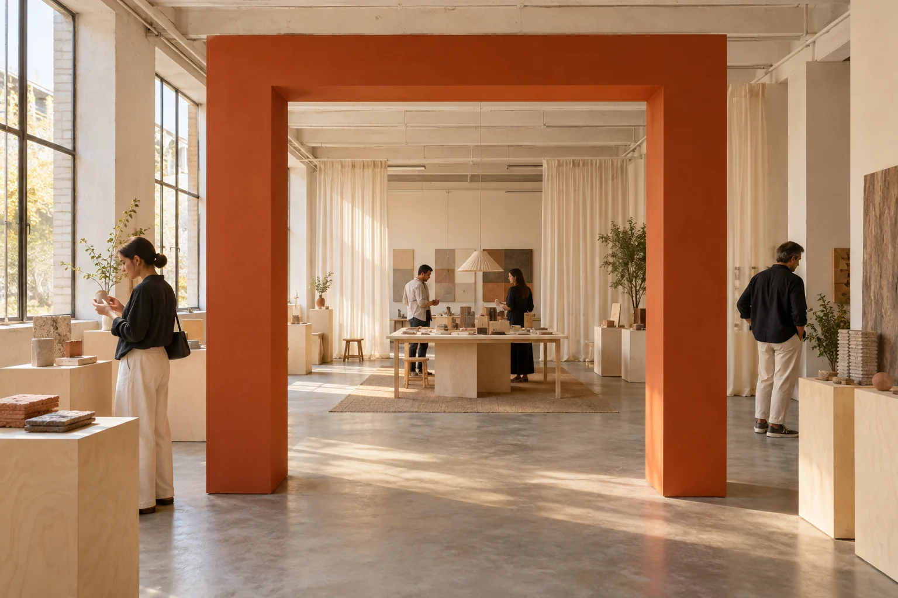

Spatial design & production coordination / BarcelonaMake room
Make room
for a story.
Temporary exhibitions, pop-ups and small gatherings. We turn the thing you want to say into somewhere people can spend time.

Materials, making and a conversationStep inside the project ↗
The room follows.
A clear beginning.
A reason to stay.
Something to carry away.
We work with cultural and brand teams to shape what a visitor sees, does and understands — then coordinate the content, objects and people needed to make that sequence work.
Explore our scopeThree ways
to bring people in.
Self-initiated concept projects, each built around a different invitation.
Design Week Room ↗
A material library, an open making table and a conversation with the people who make things.
Launch Courtyard ↗
A product island and a working demonstration bar, with space for an unhurried conversation.
 03
03Community Archive ↗
A small archive of imagined everyday objects, with room to look, listen and share a thought.